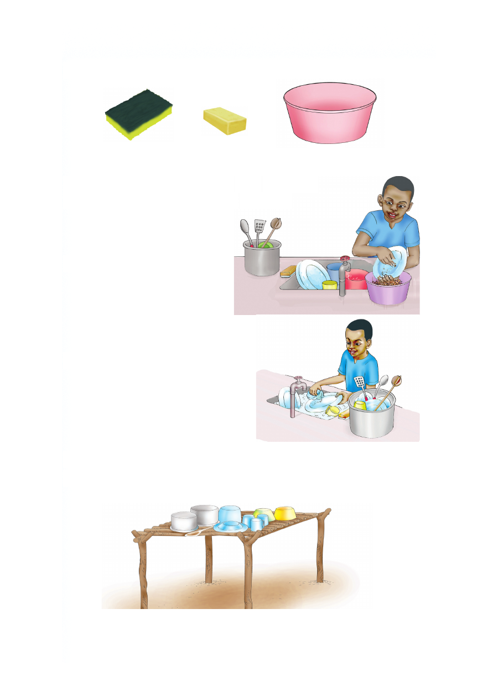

Vifaa vinavyotumika kusafishia vyombo vya chakula
kiosheo sabuni beseni
Hatua za kuosha vyombo vya chakula
1. Andaa vifaa vya kuoshea vyombo.
2. Ondoa mabaki ya
chakula kwenye
vyombo.
3. Tumia sabuni na
kiosheo kuosha chombo
kimojakimoja.
4. Suuza vyombo kwenye maji safi.
5. Kausha vyombo kwa kutumia kitamba safi. Kama huna
kitambaa anika vyombo kwenye kichanja.
Vifaa vinavyotumika kusafishia vyombo vya chakula kiosheo sabuni beseni Hatua za kuosha vyombo vya chakula 1. Andaa vifaa vya kuoshea vyombo. 2. Ondoa mabaki ya chakula kwenye vyombo. 3. Tumia sabuni na kiosheo kuosha chombo kimojakimoja. 4. Suuza vyombo kwenye maji safi. 5. Kausha vyombo kwa kutumia kitamba safi. Kama huna kitambaa anika vyombo kwenye kichanja.